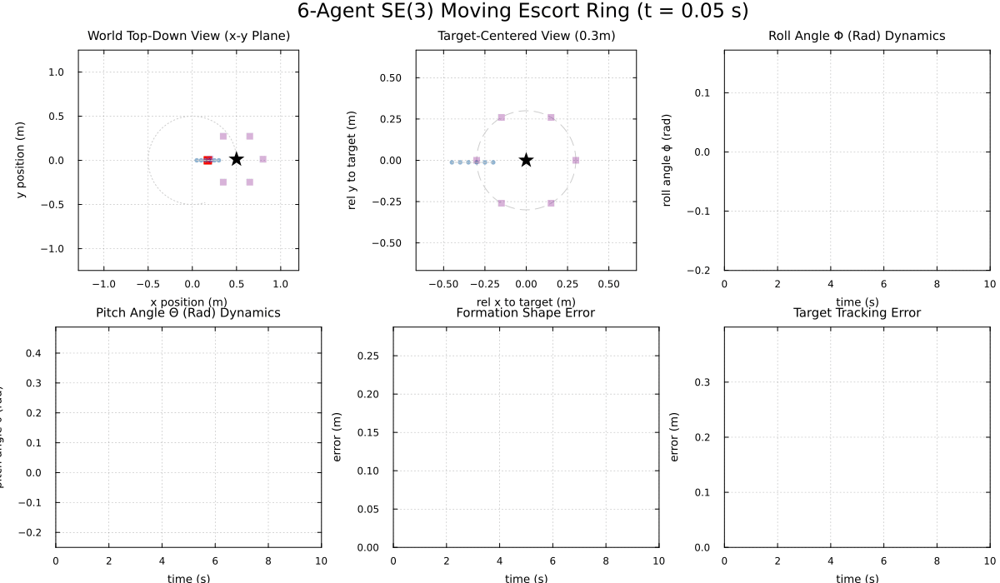

Layered Control Architecture for 6-Agent Escort Formation ($SE(3)$ Homogeneous Sheaf)
This example demonstrates scaling the layered control architecture to a 6-agent formation escorting a slow-moving target in 3D space using an $SE(3)$ Homogeneous Affine Cellular Sheaf.
High-Level API
We use the new Formations and DistributedLayeredControl modules to significantly simplify the setup of the escort ring and the execution of the distributed local controllers.
using CellularSheaves
using CellularSheaves.Formations
using CellularSheaves.AgentControllers
using CellularSheaves.DistributedLayeredControl
using LinearAlgebra
using Statistics
using Distributed
using Plots
using PrintfA single house style for every figure below
default(framestyle = :box, grid = true, gridalpha = 0.18, gridstyle = :dot,
titlefontsize = 10, guidefontsize = 9, legendfontsize = 8, tickfontsize = 8,
markerstrokewidth = 0, size = (720, 380))
const RING_COLOR = :steelblue
const TARGET_COLOR = :black:blackSetup 10D Quadrotor Dynamics & DARE Solver
dyn = QuadrotorDynamics()
DT = 0.05
nx = 1010Compute Optimal LQR Gain via Discrete Algebraic Riccati Equation (DARE)
Q_diag = [500.0, 500.0, 500.0, 150.0, 150.0, 100.0, 100.0, 100.0, 5.0, 5.0]
Q_lqr = Matrix(Diagonal(Q_diag))
R_lqr = Matrix(Diagonal([0.005, 0.005, 0.005]))
lqr_controller = LQRController(dyn, DT, Q_lqr, R_lqr)
K_lqr = lqr_controller.K3×10 Matrix{Float64}:
0.0 0.0 21.0723 0.0 0.0 … 10.4824 0.0 0.0
0.0 -1.46667 0.0 2.39227 0.0 0.0 0.255503 0.0
1.46667 0.0 0.0 0.0 2.39227 0.0 0.0 0.255503SE(3) Homogeneous Coordination Sheaf Construction (D = 4)
6 agents in a single escort ring.
const NA = 6
const NT = 1
const TV1 = NA + 1
r_ring = 0.30.3Build the escort ring, with Agent 1 pinned as the observer
sheaf = build_escort_ring(NA, TV1, r_ring; observers=[1])A network sheaf with 7 vertex stalks and 7 edge stalks.
Fast-moving target trajectory
target1_pos(node, t) = [0.5cos(0.5*t), 0.5sin(0.5*t), 1.5 + 0.1sin(1.0*t), 1.0]target1_pos (generic function with 1 method)Provision Worker Processes
Provision exactly NA worker processes (one for each agent's flight computer)
workers_pids = addprocs(NA; exeflags = "--project=$(Base.active_project())")6-element Vector{Int64}:
21
22
23
24
25
26Provide the cellular sheaves environment to all workers
@everywhere workers_pids begin
using CellularSheaves
endSimulation Framework
STEPS = 200
epsilon = 0.020.02Start agents in a line along the x-axis
init_states = [[r_ring*i/NA, 0.0, 0.0, 0.0, 0.0, 0.0, 0.0, 0.0, 0.0, 0.0] for i in 1:NA]6-element Vector{Vector{Float64}}:
[0.049999999999999996, 0.0, 0.0, 0.0, 0.0, 0.0, 0.0, 0.0, 0.0, 0.0]
[0.09999999999999999, 0.0, 0.0, 0.0, 0.0, 0.0, 0.0, 0.0, 0.0, 0.0]
[0.15, 0.0, 0.0, 0.0, 0.0, 0.0, 0.0, 0.0, 0.0, 0.0]
[0.19999999999999998, 0.0, 0.0, 0.0, 0.0, 0.0, 0.0, 0.0, 0.0, 0.0]
[0.25, 0.0, 0.0, 0.0, 0.0, 0.0, 0.0, 0.0, 0.0, 0.0]
[0.3, 0.0, 0.0, 0.0, 0.0, 0.0, 0.0, 0.0, 0.0, 0.0]Create heterogeneous agent properties (varying mass and inertia)
dyns = [QuadrotorDynamics(m=0.5 + 0.05*i, Ixx=0.01 + 0.002*i, Iyy=0.01 + 0.002*i) for i in 1:NA]
K_lqrs = [LQRController(d, DT, Q_lqr, R_lqr).K for d in dyns]
agent_configs = [(init_states[i], dyns[i], K_lqrs[i]) for i in 1:NA]
prob = LayeredControlProblem(sheaf, [TV1], target1_pos, agent_configs, DT, STEPS, r_ring)LayeredControlProblem(A network sheaf with 7 vertex stalks and 7 edge stalks.
, [7], Main.target1_pos, nothing, nothing, Tuple{Vector{Float64}, QuadrotorDynamics, Matrix{Float64}}[([0.049999999999999996, 0.0, 0.0, 0.0, 0.0, 0.0, 0.0, 0.0, 0.0, 0.0], QuadrotorDynamics(9.81, 0.55, 0.012, 0.012), [0.0 0.0 … 0.0 0.0; 0.0 -1.7599735965077932 … 0.30659989356367856 0.0; 1.7599735965077927 0.0 … 0.0 0.30659989356367856]), ([0.09999999999999999, 0.0, 0.0, 0.0, 0.0, 0.0, 0.0, 0.0, 0.0, 0.0], QuadrotorDynamics(9.81, 0.6, 0.014, 0.014), [0.0 0.0 … 0.0 0.0; 0.0 -2.0532605811338844 … 0.3576954723740814 0.0; 2.0532605811338835 0.0 … 0.0 0.3576954723740814]), ([0.15, 0.0, 0.0, 0.0, 0.0, 0.0, 0.0, 0.0, 0.0, 0.0], QuadrotorDynamics(9.81, 0.65, 0.016, 0.016), [0.0 0.0 … 0.0 0.0; 0.0 -2.3465282100371168 … 0.40878901933445405 0.0; 2.3465282100371163 0.0 … 0.0 0.4087890193344541]), ([0.19999999999999998, 0.0, 0.0, 0.0, 0.0, 0.0, 0.0, 0.0, 0.0, 0.0], QuadrotorDynamics(9.81, 0.7, 0.018000000000000002, 0.018000000000000002), [0.0 0.0 … 0.0 0.0; 0.0 -2.6397737216488646 … 0.459880244545805 0.0; 2.6397737216488633 0.0 … 0.0 0.45988024454580495]), ([0.25, 0.0, 0.0, 0.0, 0.0, 0.0, 0.0, 0.0, 0.0, 0.0], QuadrotorDynamics(9.81, 0.75, 0.02, 0.02), [0.0 0.0 … 0.0 0.0; 0.0 -2.932994355813146 … 0.5109688582551377 0.0; 2.932994355813146 0.0 … 0.0 0.5109688582551376]), ([0.3, 0.0, 0.0, 0.0, 0.0, 0.0, 0.0, 0.0, 0.0, 0.0], QuadrotorDynamics(9.81, 0.8, 0.022, 0.022), [0.0 0.0 … 0.0 0.0; 0.0 -3.2261873539624526 … 0.5620545708736221 0.0; 3.2261873539624535 0.0 … 0.0 0.5620545708736221])], 0.05, 200, 0.3, 3)Run distributed simulation
init_distributed_agents!(workers_pids, agent_configs, DT, epsilon)
sim_d_res = run_layered_simulation(prob, workers_pids; mode=:distributed)LayeredSimulationResult(LayeredControlProblem(A network sheaf with 7 vertex stalks and 7 edge stalks.
, [7], Main.target1_pos, nothing, nothing, Tuple{Vector{Float64}, QuadrotorDynamics, Matrix{Float64}}[([0.049999999999999996, 0.0, 0.0, 0.0, 0.0, 0.0, 0.0, 0.0, 0.0, 0.0], QuadrotorDynamics(9.81, 0.55, 0.012, 0.012), [0.0 0.0 … 0.0 0.0; 0.0 -1.7599735965077932 … 0.30659989356367856 0.0; 1.7599735965077927 0.0 … 0.0 0.30659989356367856]), ([0.09999999999999999, 0.0, 0.0, 0.0, 0.0, 0.0, 0.0, 0.0, 0.0, 0.0], QuadrotorDynamics(9.81, 0.6, 0.014, 0.014), [0.0 0.0 … 0.0 0.0; 0.0 -2.0532605811338844 … 0.3576954723740814 0.0; 2.0532605811338835 0.0 … 0.0 0.3576954723740814]), ([0.15, 0.0, 0.0, 0.0, 0.0, 0.0, 0.0, 0.0, 0.0, 0.0], QuadrotorDynamics(9.81, 0.65, 0.016, 0.016), [0.0 0.0 … 0.0 0.0; 0.0 -2.3465282100371168 … 0.40878901933445405 0.0; 2.3465282100371163 0.0 … 0.0 0.4087890193344541]), ([0.19999999999999998, 0.0, 0.0, 0.0, 0.0, 0.0, 0.0, 0.0, 0.0, 0.0], QuadrotorDynamics(9.81, 0.7, 0.018000000000000002, 0.018000000000000002), [0.0 0.0 … 0.0 0.0; 0.0 -2.6397737216488646 … 0.459880244545805 0.0; 2.6397737216488633 0.0 … 0.0 0.45988024454580495]), ([0.25, 0.0, 0.0, 0.0, 0.0, 0.0, 0.0, 0.0, 0.0, 0.0], QuadrotorDynamics(9.81, 0.75, 0.02, 0.02), [0.0 0.0 … 0.0 0.0; 0.0 -2.932994355813146 … 0.5109688582551377 0.0; 2.932994355813146 0.0 … 0.0 0.5109688582551376]), ([0.3, 0.0, 0.0, 0.0, 0.0, 0.0, 0.0, 0.0, 0.0, 0.0], QuadrotorDynamics(9.81, 0.8, 0.022, 0.022), [0.0 0.0 … 0.0 0.0; 0.0 -3.2261873539624526 … 0.5620545708736221 0.0; 3.2261873539624535 0.0 … 0.0 0.5620545708736221])], 0.05, 200, 0.3, 3), [0.05025635306433698 0.1001860262522584 … 0.25002664725578755 0.3001110788407213; 0.05371421673452679 0.10269719358362983 … 0.2503934701640751 0.30161786861965034; … ; 0.2627886126062208 0.1127883987834023 … -0.1872124400243498 0.1127872145479998; 0.2749606841217922 0.12496046995277174 … -0.1750403702061529 0.12495928381884214;;; 4.298628661360359e-6 9.36513417788163e-5 … -8.504744451877343e-5 -8.504463875086192e-5; 6.655430054962836e-5 0.0013606789612274073 … -0.001227481572081487 -0.0012274439756273228; … ; -0.48646841409908126 -0.22666077665373463 … -0.7462759546563095 -0.7462759282362609; -0.48724658841907426 -0.22743895631944797 … -0.747054155322876 -0.7470541375446976;;; 0.0727014799037509 0.07261977586483521 … 0.07233492732168553 0.07222708379080155; 0.2170507289752302 0.21688836379398968 … 0.21632087423224908 0.21610544359079525; … ; 1.4909012140446434 1.4909061408775601 … 1.4909234013953108 1.4909299704544157; 1.4863735748347882 1.4863784719457787 … 1.4863956284631399 1.4864021579931814;;; -0.002103304543784886 -0.04582328649728017 … 0.04161342851071487 0.0416120556579141; -0.0073251408505463226 -0.11589620055369357 … 0.10124146194799043 0.10123954036304819; … ; -0.012397258249695729 -0.01239725780607588 … -0.012397256224199705 -0.012397255550906063; -0.012417089398365144 -0.012417089094036772 … -0.012417088041230366 -0.012417087588167874;;; 0.12543269203032922 0.09102201945366435 … 0.013038412617772381 0.05435050310526939; 0.31216144953296066 0.22746351389785735 … 0.03606267626876 0.13941163596022924; … ; 0.0009483023509448003 0.0009483078215218757 … 0.0009483292461378163 0.000948338022109456; 0.0006381068576067744 0.000638112334657371 … 0.0006381337884261281 0.0006381425812976772;;; 0.02050824514695883 0.014882100180674119 … 0.0021317804630057837 0.008886307257711546; 0.13307137758647436 0.09671868524499615 … 0.014423369421965393 0.058339031510343656; … ; 0.24323420750841615 0.24323419924212228 … 0.24323416696163888 0.24323415386074096; 0.24362329463286395 0.2436232890516045 … 0.24362326728756772 0.243623258495667;;; 0.0003438902929088288 0.007492107342305308 … -0.0068037955615018785 -0.006803571100068955; 0.002573221700699639 0.04891745815975013 … -0.043768161274503954 -0.0437669492496342; … ; -0.01860569368076981 -0.018605800497767323 … -0.018606220170097058 -0.01860639286037479; -0.01251965792254945 -0.012519764922976339 … -0.012520185241524588 -0.012520358208055554;;; 2.9080591961500364 2.9047910345934085 … 2.8933970928674215 2.889083351632062; 2.8659107667091357 2.865952482572771 … 2.8660407835551207 2.866051040367687; … ; -0.09083696769117439 -0.09083743927921795 … -0.09083908889475173 -0.09083971567541156; -0.09026860070302137 -0.09026931799202967 … -0.09027182839207402 -0.09027278277395233;;; -0.08413218175139545 -1.832931459891207 … 1.664537140428595 1.6644822263165642; -0.12474127051906203 -0.9699851023653289 … 0.7205841970624274 0.7206171618887993; … ; -0.0004741758867654308 -0.00047417867379944204 … -0.00047418923987733476 -0.0004741936409795909; -0.00031907006001126177 -0.00031907284463638015 … -0.0003190834413491952 -0.0003190878494928902;;; 5.01730768121317 3.6408807781465744 … 0.5215365047108953 2.174020124210776; 2.451842618892087 1.8167789996211448 … 0.3994340413286094 1.2284251899876182; … ; -0.0061989518115825246 -0.006198951650616544 … -0.0061989509396629845 -0.0061989505433411125; -0.006208867921938504 -0.006208867823963642 … -0.006208867368804539 -0.006208867089130043], [0.7998437581378501 0.64984375813785 … 0.34984375813785085 0.6498437581378501; 0.799375130197482 0.6493751301974818 … 0.3493751301974827 0.6493751301974818; … ; 0.42980146795054314 0.2798014679505433 … -0.020198532049455705 0.27980146795054334; 0.4418310927316122 0.2918310927316124 … -0.008168907268386627 0.2918310927316124;;; 0.012498697957356381 0.2723063190926871 … -0.24730892317797398 -0.2473089231779742; 0.024989584635339356 0.28479720577067 … -0.23481803649999103 -0.23481803649999125; … ; -0.48285772119526393 -0.223050100059933 … -0.7426653423305938 -0.7426653423305942; -0.47946213733156856 -0.21965451619623766 … -0.7392697584668984 -0.7392697584668988;;; 1.5049979169270682 1.5049979169270686 … 1.5049979169270689 1.5049979169270682; 1.5099833416646833 1.5099833416646837 … 1.509983341664684 1.5099833416646835; … ; 1.4498594871820805 1.4498594871820807 … 1.4498594871820807 1.4498594871820802; 1.4455978889110632 1.4455978889110637 … 1.4455978889110637 1.4455978889110632;;; 0.9999999999999974 0.9999999999999963 … 0.9999999999999962 0.9999999999999967; 0.9999999999999974 0.9999999999999963 … 0.9999999999999962 0.9999999999999967; … ; 0.9999999999999974 0.9999999999999962 … 0.9999999999999958 0.9999999999999966; 0.9999999999999974 0.9999999999999962 … 0.9999999999999958 0.9999999999999966])Run centralized simulation
init_distributed_agents!(workers_pids, agent_configs, DT, epsilon)
sim_c_res = run_layered_simulation(prob, workers_pids; mode=:centralised)
divergence = maximum(abs.(sim_d_res.sim_data .- sim_c_res.sim_data))
@printf("Max divergence between centralized and distributed 6-agent simulation: %.3e\n", divergence)Max divergence between centralized and distributed 6-agent simulation: 4.752e-14Clean up worker processes
rmprocs(workers_pids)Task (done) @0x00007f68b65d9ff0Multi-Projection Trajectory & Attitude Dynamics Visualization
We can now easily animate the simulation using the Plots.jl recipe framework. The animate_layered_escort function abstracts away the complex multi-panel visualization. (Note: this relies on the CellularSheavesPlots package extension)
animate_layered_escort(sim_d_res; frame_step = 2, filename = "layered_escort_tracking.gif", fps = 15)[ Info: Saved animation to /home/runner/work/CellularSheaves.jl/CellularSheaves.jl/docs/build/generated/layered/layered_escort_tracking.gif